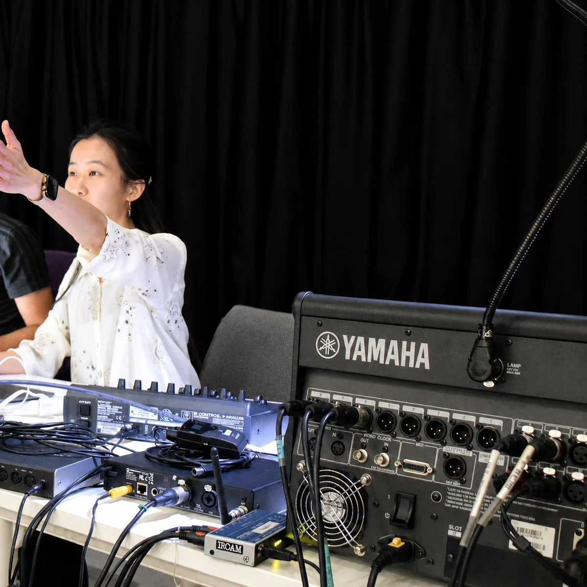
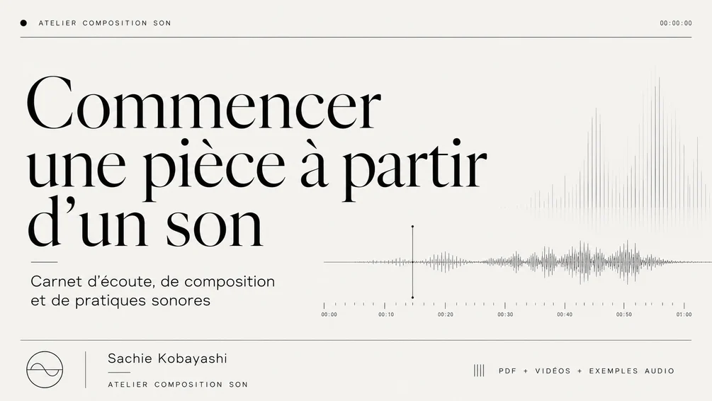
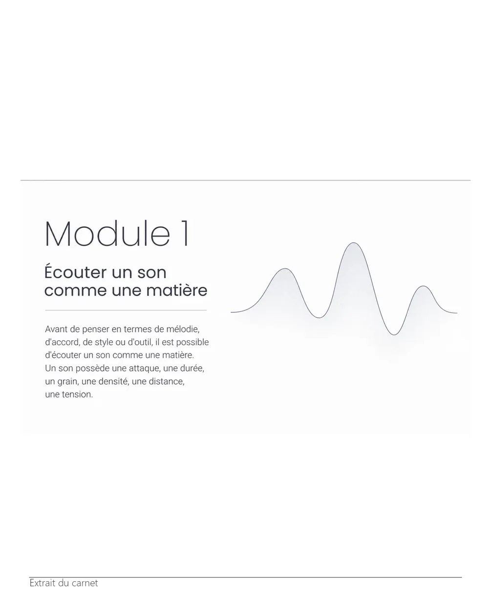
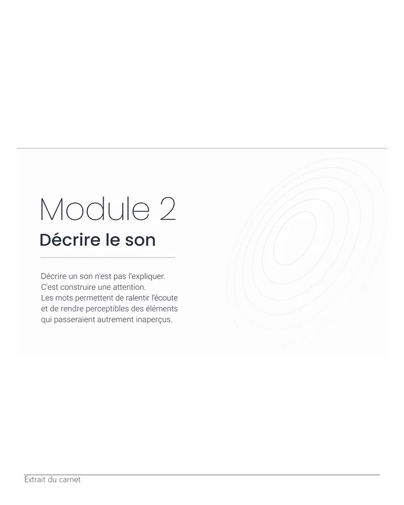
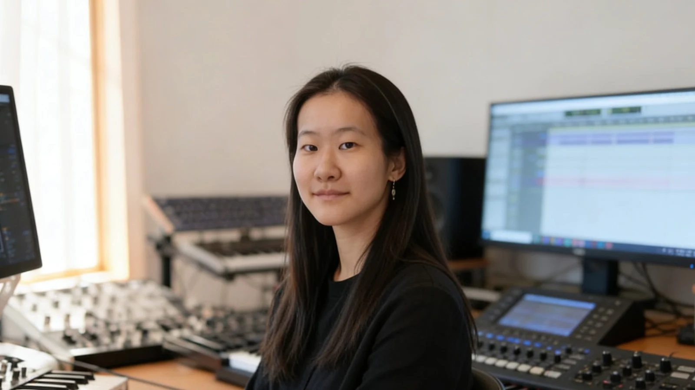

Développer un matériau en forme
Transformer une idée, un son, un motif ou une esquisse en structure musicale cohérente.
Atelier en ligne · composition · création sonore
À partir d’une partition, d’une maquette, d’un enregistrement ou d’une session DAW, clarifiez vos choix et faites avancer votre projet.
Composition, électroacoustique, Max/MSP, analyse, écriture et MAO créative.

01
Trois résultats concrets
Le point de départ peut être très simple : un son, quelques mesures, une question de forme ou une session qui n’avance plus.
Transformer une idée, un son, un motif ou une esquisse en structure musicale cohérente.
Identifier ce qui bloque dans la forme, le timbre, l’écriture, l’orchestration ou la session DAW.
Faire avancer une pièce, un portfolio, une candidature ou un projet électroacoustique jusqu’à une version partageable.
02
Formats d’accompagnement
Travail autonome, regard extérieur ciblé ou séance de projet : les trois formats répondent à des besoins distincts.
Kit autonome
19€
Découvrir une méthode de travail autonome à partir d’un son et produire une esquisse sonore de 60 secondes.



Mini retour
29€
Recevoir un retour ciblé sur une esquisse, un son ou une question clairement formulée.
Ce format convient à une question précise. Pour travailler une pièce en profondeur, choisissez la séance individuelle.
Demander un mini retourSéance individuelle
70€ / 60 min
Une heure en ligne consacrée à votre partition, maquette ou session DAW et aux décisions qui permettront de poursuivre.
Après la réservation, vous recevez les indications nécessaires pour transmettre les éléments utiles.
Réserver une séance03
Méthode de travail
La technique est abordée au moment où elle sert une intention musicale : écouter, comparer, choisir, transformer et réécrire.
Une séance de projet
Nous situons d’abord le projet : ce qui existe, ce qui résiste et ce que vous souhaitez obtenir. Nous travaillons ensuite sur un nombre limité de décisions, puis formulons une suite d’actions réalisables.
La partition, le son et la session sont considérés comme des matériaux de pensée, pas comme de simples exercices techniques.
Écouter, décrire et identifier les propriétés du matériau.
Définir une durée, une densité, une tessiture, une règle ou une trajectoire.
Produire plusieurs variantes avec un geste, un algorithme, un système ou un outil d’IA.
Comparer les résultats et décider ce qui possède une valeur musicale.
Modifier, recomposer, orchestrer et intégrer le matériau dans une forme.
Partition, enregistrement, Ableton Live, Logic Pro, Reaper, Pro Tools, Max/MSP, Python et outils d’IA peuvent être mobilisés selon le projet. Il n’est pas nécessaire de posséder les mêmes logiciels que l’atelier.
04
Expérience et domaines de pratique
Les séances relient les outils d’écriture aux conditions réelles de fabrication d’une œuvre.

Sachie Kobayashi
Formée à la composition et à la pédagogie musicale à la Haute école de musique de Genève, puis au Cursus de composition et d’informatique musicale de l’IRCAM, Sachie Kobayashi développe des œuvres instrumentales, électroacoustiques, audiovisuelles et installatives.
Cette expérience permet d’aborder une même question depuis plusieurs angles : partition, écoute, espace, geste, traitement du son et organisation technique.
Orchestre
Ce travail nourrit l’accompagnement autour de la forme, de la densité et de l’orchestration.
Image et son
Ce projet sert de point de départ pour travailler le montage, la production et la relation entre image et son.
Installation
Cette recherche est mobilisée dans les séances consacrées au geste, à l’espace et à l’électroacoustique.
05
Ressources et premier contact
Ressource gratuite · PDF
Un support bref pour observer votre matériau avant de choisir une méthode ou un accompagnement.
Télécharger le PDFUne question avant de réserver ?
Ce premier échange sert à vérifier le format approprié. Il ne remplace pas une analyse détaillée de l’œuvre ni une séance.
Poser une questionNon. Une intention, un son ou quelques mesures suffisent, à condition de pouvoir formuler ce que vous souhaitez examiner.
Oui. Le travail peut porter sur la sélection, la cohérence et la présentation des pièces, sans promesse d’admission.
Non. Les décisions musicales peuvent être discutées à partir d’exports audio, de captures, de partitions ou d’un partage d’écran.